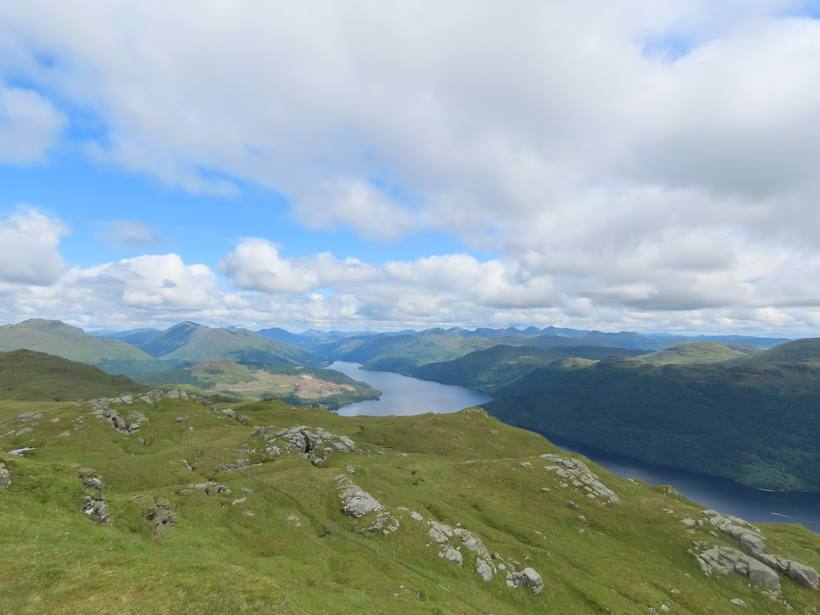

Le compromis d'Audrey entre le court (8 n) et le long (14 n) : 4 grosses bases, peu de valises défaites, et 3 nuits sur Skye autour d'une vraie pépite. Toutes les bases réellement disponibles aux dates exactes (2 pers.), vérifiées une par une sur Booking / Airbnb / Vrbo.
SUV compact automatique (Citroën C3 Aircross ou similaire), pris à l'aéroport d'Édimbourg le 7 (pas de voiture en ville : Édimbourg se fait à pied), rendu à l'aéroport de Glasgow le 14 — aller simple.
Ouvre Kayak déjà réglé : Édimbourg Airport (7/8) → Glasgow Airport (14/8), aller simple. Sur la page, filtre Boîte auto + SUV compact pour le C3 Aircross. Pense à l'assurance franchise à part, au plein→plein et au kilométrage ≥ 1 400 mi.
Les 4 bases du parcours, dans l'ordre, réellement disponibles aux dates exactes (re-vérifié le 23/6). Chaque pastille = prix/nuit (2 pers.) ; touche-la pour les distances voiture aux sites et réserver. ★ = la pépite du séjour (Skye · Harlosh 9.9).
| Base · dates | Nuits | €/nuit | Total |
|---|---|---|---|
| Édimbourg 4–7 — Bala House (8.7) | 3 | 174 | €522 |
| Fort William 7–9 — Tower Ridge House (9.2) | 2 | 209 | €418 |
| 🌟 Skye 9–12 — Harlosh Stargazer Pod (9.9) | 3 | 226 | €677 |
| Loch Lomond 12–14 — Glenfern (8.1) | 2 | 151 | €302 |
| 🛏️ Hébergement 10 nuits | 10 | ≈ €1 920 | |
| 🚗 Voiture auto (7 j) + carburant + assurance | ~€600 | ||
| TOTAL voiture + hébergement | ≈ €2 520 |